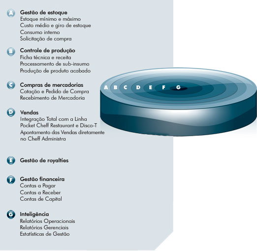

Noticias
25/06/2007
Cheff Administra é lançado durante a 23ª Fispal Food Service em São Paulo. O sistema permite a gestão administrativa integrada de um estabelecimento ou de toda uma rede de restaurantes própria ou flanqueada.
Parceiros
- HP Invent
- Intel
- Microsoft
- Vanrooy
- Software Express

Controle financeiro e administrativo
A Cheff Solutions vem constantemente buscando novas tecnologias para oferecer aos seus clientes, e com isso apresenta a sua mais nova ferramenta de Gestão Integrada: Cheff Administra.
Esse sistema é o resultado da soma das melhores práticas em gestão administrativa à mais avançada tecnologia em desenvolvimento de software.
Com o Cheff Administra é possível gerenciar totalmente o fluxo de processo e obter todas as estatísticas resultantes das informações nele apontadas, em qualquer lugar e a qualquer hora. Basta estar conectado à internet.
Interface
Interface gráfica super agradável, totalmente voltada para o ambiente da internet. Fazendo com que o uso desse aplicativo seja uma experiência confortável, aumentando a produtividade durante o desenvolvimento das tarefas de cada processo.
Inovação e parceria
A competitividade do mercado exige que as empresas inovem para se manterem a frente de seus concorrentes, e inovar também significa investir em tecnologia da informação.
Ao escolher o sistema de gestão integrada Cheff Administra, sua empresa não leva somente uma ferramenta administrativa de última geração, mas sobretudo realiza uma parceria com a Cheff Solutions.
Sinergia
É a ação que sua organização receberá com essa parceria, pois com a soma do conhecimento do seu negócio aliado ao nosso conhecimento técnico e administrativo, e com o uso dessa ferramenta de gestão, as tarefas, os processos, as informações e os controles fluirão de maneira dinâmica, ágil e natural.
Resultando em informações rápidas e seguras para a tomada de decisão.
Gestão de estoque
O estoque é uma área fundamental em termos de controle de uma organização portanto entendemos ser fundamental prover uma aplicação que ofereça todo o controle de estocagem de forma rápida e intuitiva, otimizando assim o processo de suprimento e permitindo uma redução do estoque e dos custos inerentes à essa área.
Controlar o estoque de forma eficiente resulta na diminuição imediata dos custos fixos, controle sobre os custos variáveis e melhoria nos produtos acabados, refletindo em uma qualidade melhor dos produtos e serviços oferecido pela empresa aos seus clientes.
- Integração dos processos e tarefas
- Eliminação de etapas e retrabalhos
- Melhor aproveitamento dos recursos humanos
- Eficácia para cada rotina
- Eficiência nos resultados administrativo financeiro
- Segurança nas informações para a tomada de decisão
Benefícios
Módulos
Para atender de forma ampla a necessidade administrativa do seu negócio, foi desenvolvido uma solução que atende as áreas mais importantes da empresa.
Controle de produção
Com esse módulo é possível realizar as tarefas de processamento e produção dos itens desejados, para isso basta cadastrar os sub-insumos que possam ser extraídos de um insumo, assim como, os insumos de um produto acabado em sua ficha técnica, podendo também ser descrito de forma detalhada toda a receita do produto.
Todo o processo de entrada e saída do estoque é feito automaticamente, bastando ao operador do sistema indicar a quantidade desejada a ser processada ou produzida.
Compra de mercadorias
De forma eficaz é possível elaborar a cotação dos itens solicitados, avaliação de preços, previsões e pedido de compra dos fornecedores que apresentaram a melhor opção na negociação.
Gestão de Royalites
Fundamental para uma rede de franquia é o controle do royalties, isso é possível com a nossa ferramenta. Tornando a relação entre franqueador e franqueado mais dinâmica e transparente.
Além de oferecer mais uniformidade nos itens como cardápio, estrutura de receita dos produtos, fornecedores, custos praticados e preços sugeridos.
Inteligência
A consolidação de todos os dados contido no sistema são extraídos de forma “inteligente” pelo Cheff Administra, oferecendo ao administrador uma gama ampla de informações por meio de relatórios ou alertas.
Essas informações podem ser operacionais ou gerenciais, porém o mais importante é que são informações estratégicas para o seu negócio, além da Cheff Solutions oferecer total abertura e capacidade técnica para o desenvolvimento de estatísticas específicas e focadas em sua organização.
Vendas
O Cheff Administra tem integração total com toda a linha de produtos Pocket Cheff (Pocket Cheff Restaurant e Disco-T), podendo assim ter todas as informações de vendas realizadas nos diversos pontos de venda, consolidada em uma única aplicação, podendo ter uma visão geral de todas as unidades, lojas ou franquias em um único local.
Além da integração o Cheff Administra também permite lançar todos os dados de venda diretamente em sua base de dados.
Financeiro
A área mais beneficiada quando uma empresa adota uma solução de gestão integrada é a financeira, pois quando o fluxo das informações é agilizado, o gestor consegue ter uma visão exata da situação econômica do seu negócio, e toma as decisões coerentes com base nos resultados presente e futuro da organização.
O Cheff Administra além de integrar as previsões advindas de compras e vendas, consegue administrar as taxas futuras de operações financeiras tais como as das administradoras de cartões e similares.
Outro ponto importante é a previsão de receita (para o franqueador) e despesa (para o franqueado) dos valores inerentes aos royalties. Todas essas previsões de crédito ou débito são vistas no fluxo de caixa e também no relatório de liquidez, além de outras formas de apuração dos resultados financeiros.